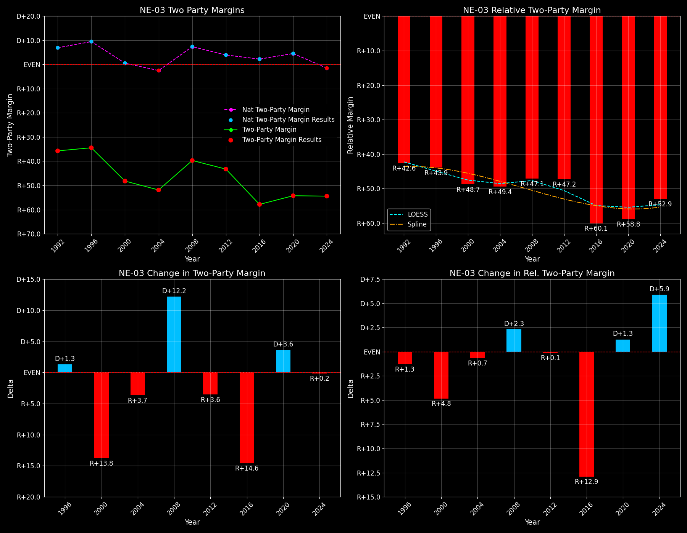

Nebraska's 3rd-Congressional District (NE-03)

Margins · 3rd-Party share · Pres. deltas

Relative margins · Relative 3rd-Party · Rel. deltas
Nebraska's 3rd-Congressional District (NE-03) — Total Data
| Year | D | R | State Margin | Nat. Margin | Rel. Margin | Total votes | EVs |
|---|---|---|---|---|---|---|---|
| 1992 | 57,467(23.5%) | 121,342(49.7%) | R+26.1 | D+5.6 | R+31.7 | 244,282 | 1 |
| 1996 | 64,382(28.7%)(Δ 6,915) | 132,015(58.8%)(Δ 10,673) | R+30.1(Δ R+4.0) | D+8.5(Δ D+3.0) | R+38.7(Δ R+6.9) | 224,425 | 1 |
| 2000 | 55,859(24.9%)(Δ -8,523) | 159,815(71.4%)(Δ 27,800) | R+46.4(Δ R+16.3) | D+0.5(Δ R+8.0) | R+46.9(Δ R+8.3) | 223,984 | 1 |
| 2004 | 60,156(23.7%)(Δ 4,297) | 189,885(74.9%)(Δ 30,070) | R+51.2(Δ R+4.8) | R+2.5(Δ R+3.0) | R+48.7(Δ R+1.8) | 253,452 | 1 |
| 2008 | 73,099(29.6%)(Δ 12,943) | 169,361(68.6%)(Δ -20,524) | R+39.0(Δ D+12.2) | D+7.3(Δ D+9.7) | R+46.3(Δ D+2.4) | 246,742 | 1 |
| 2012 | 72,110(27.8%)(Δ -989) | 182,067(70.2%)(Δ 12,706) | R+42.4(Δ R+3.4) | D+3.9(Δ R+3.4) | R+46.3(Δ D+0.0) | 259,223 | 1 |
| 2016 | 53,332(19.7%)(Δ -18,778) | 199,755(74.0%)(Δ 17,688) | R+54.2(Δ R+11.8) | D+2.1(Δ R+1.8) | R+56.3(Δ R+10.0) | 270,109 | 1 |
| 2020 | 65,854(22.3%)(Δ 12,522) | 222,179(75.4%)(Δ 22,424) | R+53.0(Δ D+1.2) | D+4.5(Δ D+2.4) | R+57.5(Δ R+1.2) | 294,831 | 1 |
| 2024 | 70,301(22.4%)(Δ 4,447) | 238,245(76.0%)(Δ 16,066) | R+53.6(Δ R+0.6) | R+1.5(Δ R+5.9) | R+52.1(Δ D+5.4) | 313,342 | 1 |
Column explanations
- Δ
- Change (delta) in the value from the previous election year.
- Year
- Election year.
- D
- Number of votes for the Democratic candidate (raw count(pct%)).
- R
- Number of votes for the Republican candidate (raw count(pct%)).
- State Margin
- Margin between the two major-party candidates, including third-party votes ((D - R)/total).
- Nat. Margin
- The national presidential margin for that year, including third-party votes ((D_total - R_total)/total_votes).
- Rel. Margin
- The presidential margin relative to the national presidential margin (Margin - Nat. Margin).
- Total votes
- Total voter turnout or ballots cast (when provided).
- EVs
- Number of electoral votes allocated to this state or unit.
Nebraska's 3rd-Congressional District (NE-03) — Third-Party Data
| Year | D | R | Other votes | State 3rd-Party Share | 3rd-Party Nat. Share | 3rd-Party Rel. Share |
|---|---|---|---|---|---|---|
| 1992 | 57,467(23.5%) | 121,342(49.7%) | 65,473(26.8%) | 26.80% | 19.55% | 7.26% |
| 1996 | 64,382(28.7%)(Δ 6,915) | 132,015(58.8%)(Δ 10,673) | 28,028(12.5%) | 12.49% | 10.05% | 2.44% |
| 2000 | 55,859(24.9%)(Δ -8,523) | 159,815(71.4%)(Δ 27,800) | 8,310(3.7%) | 3.71% | 3.75% | -0.04% |
| 2004 | 60,156(23.7%)(Δ 4,297) | 189,885(74.9%)(Δ 30,070) | 3,411(1.3%) | 1.35% | 1.00% | 0.35% |
| 2008 | 73,099(29.6%)(Δ 12,943) | 169,361(68.6%)(Δ -20,524) | 4,282(1.7%) | 1.74% | 1.42% | 0.31% |
| 2012 | 72,110(27.8%)(Δ -989) | 182,067(70.2%)(Δ 12,706) | 5,046(1.9%) | 1.95% | 1.73% | 0.21% |
| 2016 | 53,332(19.7%)(Δ -18,778) | 199,755(74.0%)(Δ 17,688) | 17,022(6.3%) | 6.30% | 5.73% | 0.57% |
| 2020 | 65,854(22.3%)(Δ 12,522) | 222,179(75.4%)(Δ 22,424) | 6,798(2.3%) | 2.31% | 1.84% | 0.46% |
| 2024 | 70,301(22.4%)(Δ 4,447) | 238,245(76.0%)(Δ 16,066) | 4,796(1.5%) | 1.53% | 1.88% | -0.35% |
Column explanations
- Year
- Election year.
- D
- Number of votes for the Democratic candidate (raw count(pct%)).
- R
- Number of votes for the Republican candidate (raw count(pct%)).
- Other votes
- Number of votes for third-party (other) candidates (raw count(pct%)).
- State 3rd-Party Share
- Share of the vote received by third-party (other) candidates.
- 3rd-Party Nat. Share
- The national third-party share for that year (3rd-Party votes / total votes).
- 3rd-Party Rel. Share
- Third-party share relative to the national third-party share (3rd-Party share - Nat. 3rd-Party share).

Two-party margins · relative · deltas
Nebraska's 3rd-Congressional District (NE-03) — Two-Party Data
| Year | D | R | 2-Party Margin | 2-Party Nat. Margin | 2-Party Rel. Margin | EVs |
|---|---|---|---|---|---|---|
| 1992 | 57,467(32.1%) | 121,342(67.9%) | R+35.7 | D+6.9 | R+42.6 | 1 |
| 1996 | 64,382(32.8%)(Δ 6,915) | 132,015(67.2%)(Δ 10,673) | R+34.4(Δ D+1.3) | D+9.5(Δ D+2.6) | R+43.9(Δ R+1.3) | 1 |
| 2000 | 55,859(25.9%)(Δ -8,523) | 159,815(74.1%)(Δ 27,800) | R+48.2(Δ R+13.8) | D+0.5(Δ R+8.9) | R+48.7(Δ R+4.8) | 1 |
| 2004 | 60,156(24.1%)(Δ 4,297) | 189,885(75.9%)(Δ 30,070) | R+51.9(Δ R+3.7) | R+2.5(Δ R+3.0) | R+49.4(Δ R+0.7) | 1 |
| 2008 | 73,099(30.1%)(Δ 12,943) | 169,361(69.9%)(Δ -20,524) | R+39.7(Δ D+12.2) | D+7.4(Δ D+9.9) | R+47.1(Δ D+2.3) | 1 |
| 2012 | 72,110(28.4%)(Δ -989) | 182,067(71.6%)(Δ 12,706) | R+43.3(Δ R+3.6) | D+3.9(Δ R+3.4) | R+47.2(Δ R+0.1) | 1 |
| 2016 | 53,332(21.1%)(Δ -18,778) | 199,755(78.9%)(Δ 17,688) | R+57.9(Δ R+14.6) | D+2.2(Δ R+1.7) | R+60.1(Δ R+12.9) | 1 |
| 2020 | 65,854(22.9%)(Δ 12,522) | 222,179(77.1%)(Δ 22,424) | R+54.3(Δ D+3.6) | D+4.5(Δ D+2.3) | R+58.8(Δ D+1.3) | 1 |
| 2024 | 70,301(22.8%)(Δ 4,447) | 238,245(77.2%)(Δ 16,066) | R+54.4(Δ R+0.2) | R+1.5(Δ R+6.0) | R+52.9(Δ D+5.9) | 1 |
Column explanations
- Δ
- Change (delta) in the value from the previous election year.
- Year
- Election year.
- D
- Number of votes for the Democratic candidate (raw count(pct%)).
- R
- Number of votes for the Republican candidate (raw count(pct%)).
- 2-Party Margin
- Margin between the two major-party candidates, ignoring third-party votes ((D - R)/(D + R)).
- 2-Party Nat. Margin
- The national presidential margin for that year, including third-party votes ((D_total - R_total)/total_votes).
- 2-Party Rel. Margin
- The presidential margin relative to the national presidential margin (Margin - Nat. Margin).
- EVs
- Number of electoral votes allocated to this state or unit.